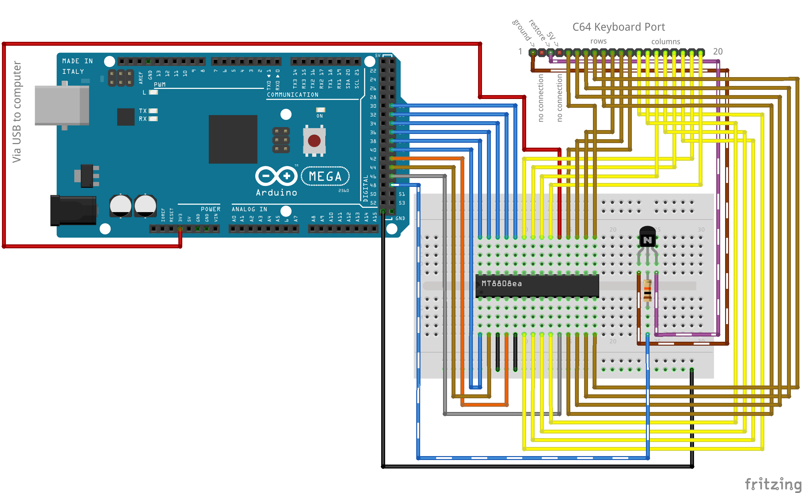

This project, consisting of hardware and software, emulates the keyboard of Commodore 64. It allows one to send a string of characters using the supplied Python script, and have it displayed on the C64 screen.
A Python script on the computer accepts text to type in various forms (e.g. interactively typed-in, from command line, redirected from other command). The script maps the text to keys or key combinations, and then as another step maps those to 6-bit binary codes. Then the codes are passed via the serial interface (here USB) to the Arduino microcontroller. A listening program on the Arduino accepts the codes and sends them as 6-bit addresses to the write-only memory of an 8x8 crosspoint switch (MT8808), along with 1-bit data. A 6-bit address + 1-bit data are equivalent to "a specific key on" or "a specific key off" command. The command is latched in the crosspoint switch using a strobe signal which results in a particular column pin being shorted with a particular row pin, i.e. effectively pressing a specific key on C64. In case of key combinations, 2 or more such "commands" are queued before latching. The Restore key which is activated by connecting to ground needs a separate handling using a transistor.
Make the following connections. If you want to use different digital pins on the Arduino, remember to adjust the numbers in the code later.

C64 Key C64 Pins C64 Ports 8088 AY2 AY1 AY0 AX2 AX1 AX0 DEL 13 12 PA0 PB0 X0Y0 0 0 0 0 0 0 3 19 12 PA1 PB0 X1Y0 0 0 0 0 0 1 5 18 12 PA2 PB0 X2Y0 0 0 0 0 1 0 7 17 12 PA3 PB0 X3Y0 0 0 0 0 1 1 9 16 12 PA4 PB0 X4Y0 0 0 0 1 0 0 + 15 12 PA5 PB0 X5Y0 0 0 0 1 0 1 £ 14 12 PA6 PB0 X6Y0 0 0 0 1 1 0 1 20 12 PA7 PB0 X7Y0 0 0 0 1 1 1 Return 13 11 PA0 PB1 X0Y1 0 0 1 0 0 0 W 19 11 PA1 PB1 X1Y1 0 0 1 0 0 1 R 18 11 PA2 PB1 X2Y1 0 0 1 0 1 0 Y 17 11 PA3 PB1 X3Y1 0 0 1 0 1 1 I 16 11 PA4 PB1 X4Y1 0 0 1 1 0 0 P 15 11 PA5 PB1 X5Y1 0 0 1 1 0 1 * 14 11 PA6 PB1 X6Y1 0 0 1 1 1 0 <- 20 11 PA7 PB1 X7Y1 0 0 1 1 1 1 _ 13 10 PA0 PB2 X0Y2 0 1 0 0 0 0 A 19 10 PA1 PB2 X1Y2 0 1 0 0 0 1 D 18 10 PA2 PB2 X2Y2 0 1 0 0 1 0 G 17 10 PA3 PB2 X3Y2 0 1 0 0 1 1 J 16 10 PA4 PB2 X4Y2 0 1 0 1 0 0 L 15 10 PA5 PB2 X5Y2 0 1 0 1 0 1 ; 14 10 PA6 PB2 X6Y2 0 1 0 1 1 0 CTRL 20 10 PA7 PB2 X7Y2 0 1 0 1 1 1 F7 19 5 PA1 PB3 X1Y3 0 1 1 0 0 0 4 18 5 PA2 PB3 X2Y3 0 1 1 0 0 1 6 17 5 PA3 PB3 X3Y3 0 1 1 0 1 0 8 16 5 PA4 PB3 X4Y3 0 1 1 0 1 1 0 15 5 PA5 PB3 X5Y3 0 1 1 1 0 0 - 14 5 PA6 PB3 X6Y3 0 1 1 1 0 1 Home 14 5 PA6 PB3 X6Y3 0 1 1 1 1 0 2 20 5 PA7 PB3 X7Y3 0 1 1 1 1 1 F1 13 8 PA0 PB4 X0Y4 1 0 0 0 0 0 Z 19 8 PA1 PB4 X1Y4 1 0 0 0 0 1 C 18 8 PA2 PB4 X2Y4 1 0 0 0 1 0 B 17 8 PA3 PB4 X3Y4 1 0 0 0 1 1 M 16 8 PA4 PB4 X4Y4 1 0 0 1 0 0 . 15 8 PA5 PB4 X5Y4 1 0 0 1 0 1 Right Shift 14 8 PA6 PB4 X6Y4 1 0 0 1 1 0 Space 20 8 PA7 PB4 X7Y4 1 0 0 1 1 1 F3 13 7 PA0 PB5 X0Y5 1 0 1 0 0 0 S 19 7 PA1 PB5 X1Y5 1 0 1 0 0 1 F 18 7 PA2 PB5 X2Y5 1 0 1 0 1 0 H 17 7 PA3 PB5 X3Y5 1 0 1 0 1 1 K 16 7 PA4 PB5 X4Y5 1 0 1 1 0 0 : 15 7 PA5 PB5 X5Y5 1 0 1 1 0 1 = 14 7 PA6 PB5 X6Y5 1 0 1 1 1 0 Commodore 20 7 PA7 PB5 X7Y5 1 0 1 1 1 1 F5 13 6 PA0 PB6 X0Y6 1 1 0 0 0 0 E 19 6 PA1 PB6 X1Y6 1 1 0 0 0 1 T 18 6 PA2 PB6 X2Y6 1 1 0 0 1 0 U 17 6 PA3 PB6 X3Y6 1 1 0 0 1 1 O 16 6 PA4 PB6 X4Y6 1 1 0 1 0 0 @ 15 6 PA5 PB6 X5Y6 1 1 0 1 0 1 _ 14 6 PA6 PB6 X6Y6 1 1 0 1 1 0 Q 20 6 PA7 PB6 X7Y6 1 1 0 1 1 1 _ 13 9 PA0 PB7 X0Y7 1 1 1 0 0 0 Left Shift 19 9 PA1 PB7 X1Y7 1 1 1 0 0 1 X 18 9 PA2 PB7 X2Y7 1 1 1 0 1 0 V 17 9 PA3 PB7 X3Y7 1 1 1 0 1 1 N 16 9 PA4 PB7 X4Y7 1 1 1 1 0 0 , 15 9 PA5 PB7 X5Y7 1 1 1 1 0 1 / 14 9 PA6 PB7 X6Y7 1 1 1 1 1 0 Run/Stop 20 9 PA7 PB7 X7Y7 1 1 1 1 1 1